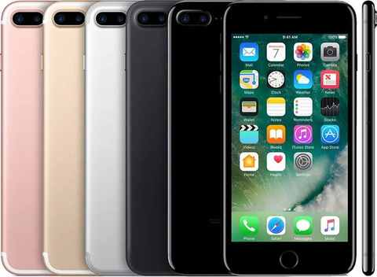
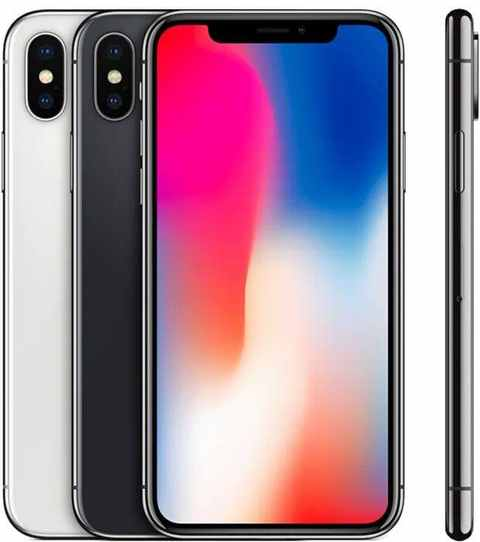
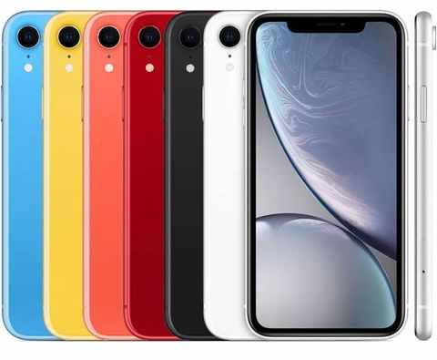
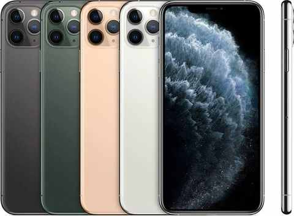
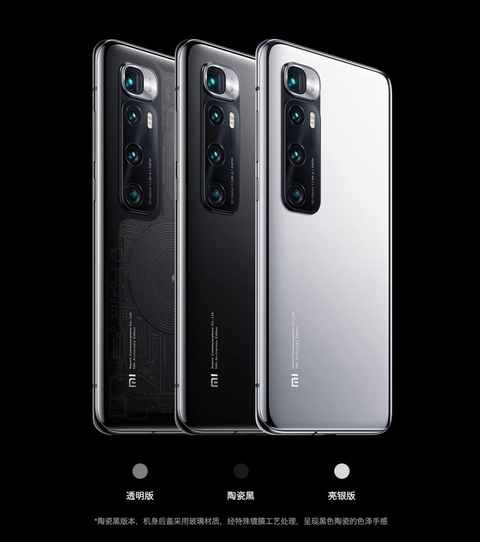
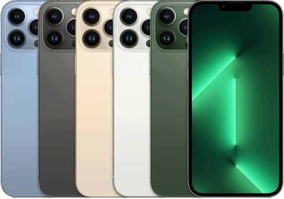
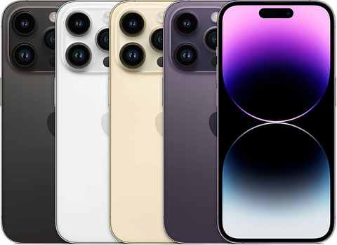
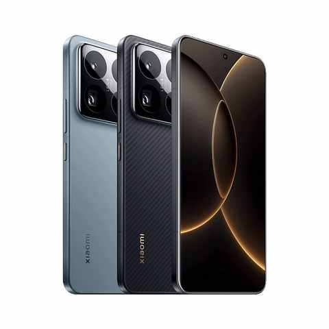
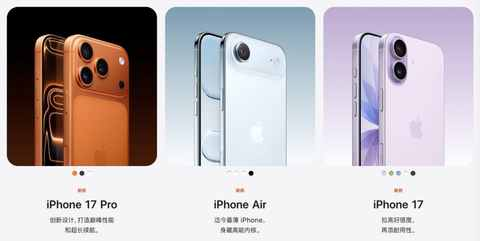
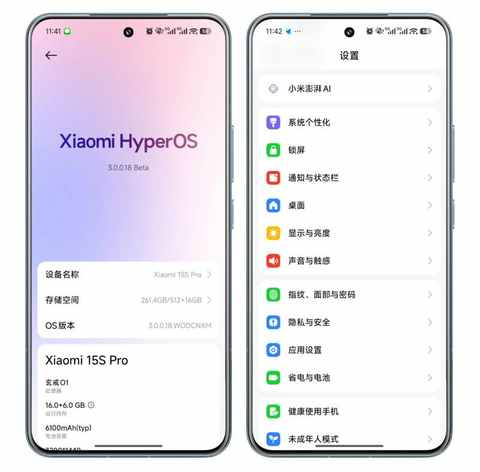

当认清自身需求之后：面对 iPhone 17的发布，毫无波澜，无购买欲！
一、认清自身需求并不容易
面对信息的洪流，最简单的应对方式是：不假思索的随波逐流。
思考并不难，难的是一层层的去深度分析自身需求。分析需求，需要经验、技巧、耐心、阅历……
用更简单的话表述：对综合能力有相当的要求。每个人都必须要面对真实的自己，基于当下与对未来的预期做决策。
二、回溯 历年换机情况
从 2015 年到 2025 年，10 年时间 9 款手机，几乎是一年一换的节奏。如果不仔细复盘，能轻易地得出一个很正确的结论：
改成 2-3 年一换也不会影响到工作和生活，对使用体验的影响有限的同时还能省不少钱。
但具体问题要具体分析，必须要回到当时的实际场景中：
2015 年 4 月，iPhone 6 Plus

换机理由：
- 体验不佳：当时用的魅族手机会莫名其妙的卡顿
2016 年 11 月，iPhone 7 Plus

换机理由：
- 消费冲动：被新升级的软硬件触发
2017 年 12 月，iPhone X

换机理由：
- 被外观打动： 在迪士尼餐厅看到不少人用
2018 年 12 月， iPhone Xr

换机理由：
- 续航焦虑： iPhone X 的续航太差
2019 年 10 月， iPhone 11 Pro Max

换机理由：
- 消费冲动： 看了太多的测评，以为这些软硬件的升级我都需要
2020 年 12 月， 小米 10 Ultra

换机理由：
- 小米的 10 周年纪念版手机，各种配置拉满
- 被雷总的演讲感染到
2022 年 3 月， iPhone 13 Pro Max

换机理由：
- 体验不佳： 升级最新版本 iOS 之后卡顿和发热明显
2023 年 11 月， iPhone 14 Pro

换机理由：
- 存储告急
- 多年未用过小屏手机
- 想 感受下灵动岛
2025 年 7 月， 小米 15s Pro

换机理由：
- 不想被苹果生态绑定
- 想尝试各家产品混搭使用
- 再次被雷总的演讲感染到
三、当下的真实需求
排除价格因素，核心需求就是三个：
① 系统流畅
有点小 bug 都行，不影响我的日常使用体验
② 续航能撑一天
即便忘记带充电宝出门也不担心没电，遇到过 iPhone 突然没电之后，车子解锁不了的尴尬情况。
③ 旗舰级的影像
不讲究出片，非摄影爱好者，日常以随手拍的记录为主，图或视频不出现偏色和失焦即可。
回到新发布的 iPhone 17系列，在发布会的第二天早上看了一下文章和视频的分析，针对升级的点都做了详细的说明，难得的内心毫无波澜，无任何想买的欲望。

因为，当下使用的 小米 15s Pro 完全符合需求：

iOS 系统最近几年的升级也在不断融合安卓早几年就有的功能，那直接用安卓岂不是更好。